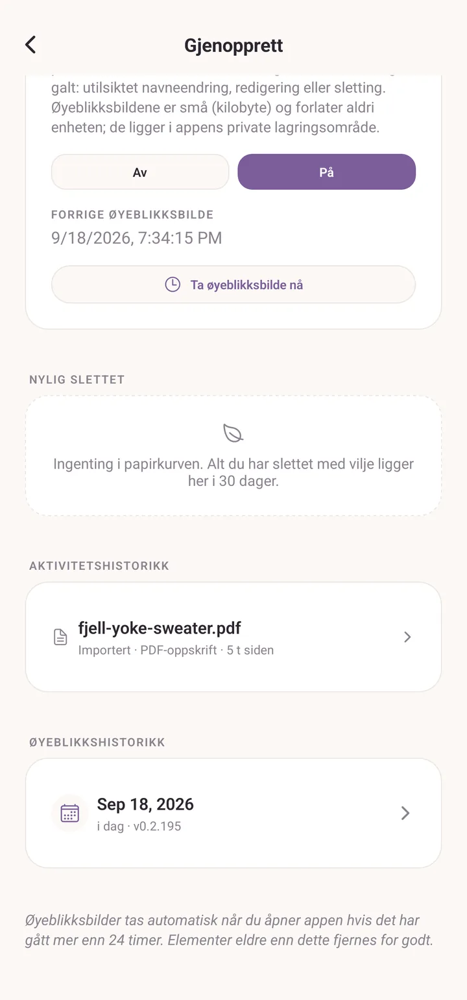
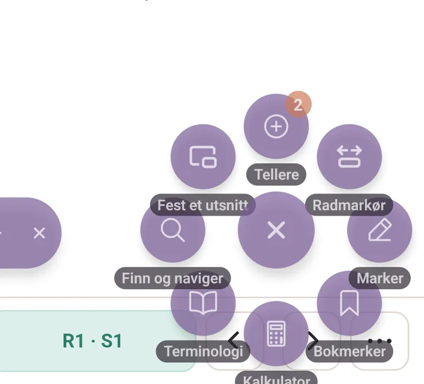
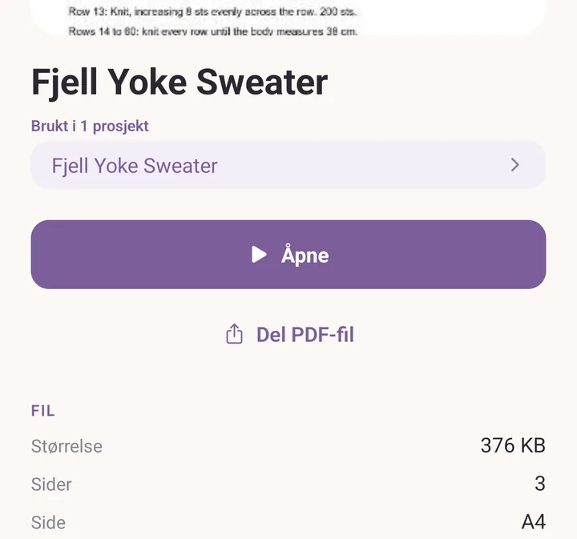

FAQ
Ting som kommer opp ofte, ting som ser ut som feil, men ikke er det, og kjente begrensninger.
Laster Purl opp dataene mine noe sted?
Nei. Alt bor på enheten din. Purl har ingen kontoordning og ingen sky. Du kan bruke den på et fly. Baksiden er at sikkerhetskopier er ditt ansvar (se sikkerhetskopier), men appen gjør dem enkle.
Hvordan flytter jeg dataene mine til en ny telefon?
Eksporter en .purl-sikkerhetskopi fra Mer > Dine data >
Eksport og import, overfør filen til den nye enheten (Drive,
e-post, USB, hva som helst virker), installer Purl på den nye
enheten, og importer. Se sikkerhetskopier for det
trinn for trinn.
Jeg slettet noe ved et uhell.
Ingen fare. Mer > Dine data > Sikkerhetskopier og historikk passer på deg, i tre bolker:
- Nylig slettet: alt du har slettet de siste 30 dagene kan hentes tilbake med ett trykk.
- Aktivitetshistorikk: en løpende liste over hva du har lagt til, importert, gjenopprettet og slettet, så du kan se hva som skjedde og når.
- Øyeblikkshistorikk: appen tar et øyeblikksbilde av seg selv når du åpner den, høyst én gang om dagen, og beholder 7 dager. Nyttig i tilfeller som "jeg slettet ti garn fordi jeg trodde de var dubletter" eller "jeg importerte en sikkerhetskopi over dataene mine".

Søket finner ikke noe jeg vet er der.
Prøv å søke med færre bokstaver; søket går på delstrenger (så "lopi" finner "Léttlopi", "jarbo" finner "Järbo"). Det folder også aksenter begge veier. Det takler ikke skrivefeil ennå (så "Sandnse" finner ikke "Sandnes", skriv nøyaktig).
Fanene Prosjekter, Oppskrifter og Stash har hver sitt eget søk over listen. Det globale søket, forstørrelsesglasset øverst i Mer, går på tvers av alt på én gang: prosjekter, oppskrifter, garn, utstyr, notatlapper i PDF-er, bokmerker i PDF-er, og terminologiordlisten.
Den norske oversettelsen har en skrivefeil / en klønete formulering.
Send en melding via Mer > Send tilbakemelding, som åpner et kort skjema i nettleseren din. Norske oversettelser går gjennom en gjennomgang før de godkjennes; høres noe feil ut, er det sannsynligvis feil.
Knappen for PDF-verktøyene er i veien.
Dra den. Den flytende knappen kan flyttes dit du vil ha den (hvilket som helst hjørne, hvilken som helst kant) og den husker plassen sin per enhet.
Hold inne den runde knappen for å åpne Verktøyinnstillinger, som rommer avstanden i vifta, navnene på verktøyene, og hvilke verktøy som vises i det hele tatt. Bare rekkefølgen deres ligger i Innstillinger, under Knapper i PDF-hurtigmenyen, bak tannhjulet øverst i Mer.

Tegningene mine på en PDF forsvant etter at jeg trykket Fjern.
Fjern spør først: Bare denne siden eller Alle sidene. Trykket du Alle sidene, er de borte. Oppdaget du det rett etterpå, åpne Mer > Dine data > Sikkerhetskopier og historikk og gjenopprett fra det ferskeste øyeblikksbildet; merknadene dine er en del av øyeblikksbildet.
En skanning kjente ikke igjen garnet mitt.
Den medfølgende katalogen dekker nordiske produsenter. Skannet du et garn som ikke er nordisk (Cascade, Madelinetosh, Brooklyn Tweed og lignende), er koden ukjent til du lagrer garnet første gang, og deretter husker appen det. Skann det igjen senere, og det blir gjenkjent.
Skannet du et nordisk garn som burde stå i katalogen og ikke gjør det, er det verdt en tilbakemelding. Katalogen blir rikere for hver utgave.
Forslagene i autofyllingen er feil / utdaterte.
Skriv inn din egen verdi. Forslagslisten er bare en hjelpende hånd. Autofylling fyller bare tomme felter når du velger et forslag; den overskriver aldri det du har skrevet.
Er en katalogoppføring feil (lengden på et garn er endret, en vekt er omklassifisert), rediger din utgave. Endringen din forgrener seg til din egen oppføring; katalogen beholder sin utgave under. Send en tilbakemelding, så kan vi rette katalogen for alle.
Hvorfor dukker det samme garnet opp to ganger i stashen min?
To grunner:
- Ulike fargepartier. To nøster med samme merke, navn og farge, men ulikt fargeparti, holdes atskilt fordi nyansen kan variere mellom partier. Stashen grupperer dem under den samme garnoppføringen.
- Ulike fargevarianter. To nøster av den samme garnlinjen i ulike farger er ulike oppføringer i stashen.
Stashlisten grupperer på merke og navn først, så på farge inni, og så på fargeparti inni der igjen. Har du faktisk to like oppføringer av samme garn, samme farge og samme fargeparti, slår du dem sammen ved å slette den ene og justere antallet nøster på den andre.
Det skannede garnbiblioteket mitt har dubletter.
Åpne Mer > Strekkodeskanner, som er Garnbibliotek ditt. Finnes det dubletter av samme produkt (tom vekt den ene gangen, "DK" den neste, eller en skrivefeil i navnet), teller et kort øverst opp de mulige dublettene og tilbyr Slå sammen. Strekkodene deres slås sammen og de mest komplette detaljene beholdes.
Blir PDF-er med i sikkerhetskopier?
Ja. En .purl-sikkerhetskopi med oppskriftskategorien huket av tar
med hver importerte PDF-fil, hvert forsidebilde, hver tegning, hver
notatlapp. Sikkerhetskopifilen blir tilsvarende større.
Hvordan deler jeg en oppskrift med en venn?
For en oppskrift du har skrevet: trykk på den i Oppskrifter-fanen
for å åpne detaljene, og trykk Del oppskrift. Den skriver en
.purlp-fil du kan sende på e-post, legge i Drive, eller sende med
AirDrop.
For en PDF du har importert: trykk på den i Oppskrifter-fanen, og trykk Del PDF-fil. Den gir den originale PDF-en videre til enhetens vanlige delingsark.
Det virker den andre veien også. En PDF som sendes til enheten din fra e-post, en melding eller en filbehandler kan åpnes rett inn i Purl, som importerer den i oppskriftsbiblioteket ditt.

For det skannede garnbiblioteket ditt (så en venn slipper å skanne
hvert garn på nytt): Mer > Strekkodeskanner > Del
bibliotek, som skriver en .purlt-fil.
Finnes det en utgave for iPhone eller iPad?
Ja. Purl ligger i App Store, og den samme appen kjører på både iPhone og iPad. iPad-en er enheten oppsettet er tegnet rundt, inkludert Apple Pencil til å tegne på oppskrifter og på diagrammer.
En funksjon ser ut til å mangle / jeg vil ha X.
To steder å se:
- Mer > Planlagt: hva som kommer.
- Mer > Nyheter: hva som kom nylig, utgave for utgave.
Står ikke ideen din noen av stedene, er Mer > Send tilbakemelding den direkte linjen. Hver melding blir lest.